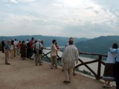

|
|
|
|
Visegrád - Wenige Kilometer stromaufwärts von
befindet sich Visegrád,
wo im
Mittelalter einige ungarische Könige residierten. Noch heute spürt der
Besucher im restaurierten Schloss der Anjou-Könige
die höfische Atmosphäre jener Zeit.
Das Wort Visegrád stammt aus dem
Slawischen und bedeutet Hohen Punkt, so wie die Burg oben auf
einer steilen Bergkuppe steht und deswegen aus allen Himmelsrichtungen aus einer sehr großen Entfernung zu sehen
ist. |
|
 |
Der touristische Stellenwert von Visegrád am Donauknie ist
vergleichbar mit der Lorelei am Rhein.
Visegrád ist
ein von den begehrten Ausflugszielen der Budapester
Bevölkerung. Die Ruine der mittelalterlichen Schlossburg
ist besonders sehenswert.
|
|
|
Die Schloßburg von Visegrád wurde einst vom König Béla IV. (Béla=Adalbert) nach der Verwüstung des Landes durch
die Tataren im Jahre 1241 als erste
befestigte Wehranlage in Ungarn erbaut. Hier residierten einige ungarische
Könige. |
Ihre Glanzzeit erlebte die Burg von Visegrád unter König Matthias
I. (1458-1490), der hier nur seine Sommerresidenz hatte, dafür aber seine
Diplomatie aus Visegrád betrieb und die ausländischen Staatsgäste
hier empfang. Die Gegend war sein Jagdrevier, ein
königliches Banngebiet.
|
|
Die heutigen Vorschriften in den Naturschutzgebieten sind kaum anders
als die vom König Matthias erlassenen Schutzvorschriften. So
gesehen ist der heutige Nationalpark Pilis, der direkt aus dem
königlichen Banngebiet hervorging, wahrscheinlich der erste
Nationalpark in Europa. Der Nationalpark Pilis erstreckt sich von der
Nordwestgrenze von Budapest in nördlicher Richtung weit über die Ortschaft Visegrád
hinaus. Er ist ein Hochwildrevier, in dem sich einst
Staatsmänner wie Leonid Breschnew, Franz Josef Strauss und Erich Honecker
sich mit einem Waidmannsheil begrüßten.
|
INTERNATIONALE
SCHLOSSSPIELE IN VISEGRÁD - jährlich Mitte Juli
Anläßlich der größten traditionspflegenden, das Mittelalter
wachrufenden Veranstaltung Ungarns defiliert ein königlicher Zug die
Hauptstraße entlang. Es werden Ritterspiele zu Fuß und hoch zu Ross
bestaunen sein, während Hofdamen der Königin ihre Reitkünste
vorführen. An diesen Turnieren nehmen außer den Gastgebern -
Mitglieder des Ordens St. Georg - auch aus anderen Ländern angereiste
Ritter teil. Man findet hier einen Volkskunstjahrmarkt und Meister des
Handwerks zeigen ihre Künste. Konzerte und Komödianten tragen zur
Unterhaltung des Publikums bei.
Die Donauschiffe fahren in den Sommermonaten vom Vigadó tér Platz in
Budapest in Richtung Esztergom und halten in Visegrád an.
Das schnelle
Tragflügelboot vom Vigadó tér Platz in Budapest
kommend macht hier Station und fährt weiter über
Bratislava nach Wien. Die Fahrzeit von Budapest nach Wien beträgt 6
Stunden. Die Rückfahrt stromabwärts geht schneller in rd. 4
Stunden.
|
|
|
In Visegrád
finden Burg-führungen statt, dabei werden
mittelalterliche Fressgelage geschichtstreu angeboten. Eine
populäre
Veranstaltung für Weinkenner "auf
König Matthias
Spuren"
zeigt den Trick, wie Matthias mit seinem ewig quellenden
Weinbrunnen am Gipfel des Burgbergs fast alle europäische Könige zu ihm
pilgern
ließ und einmal sogar den
Papst zur Heiligsprechung dieses Wunders nach Visegrád
lockte. |
|
|
| |
| |
| |
|
Ungarn-Tourist Team

|
| |
| |
|